Overview
Section I: Rasterization
Part 1: Bezier Curves with 1D de Casteljau Subdivision
De Casteljau’s algorithm is a method of creating a Bezier curve by taking weighted sums of n points to get a result of n - 1 points. When n = 1, the evaluation stops and a full Bezier curve can be drawn based on the points evaluated. We implemented the recursive call by creating a new vector of points, then looping through each pair of points to take their weighted sum.
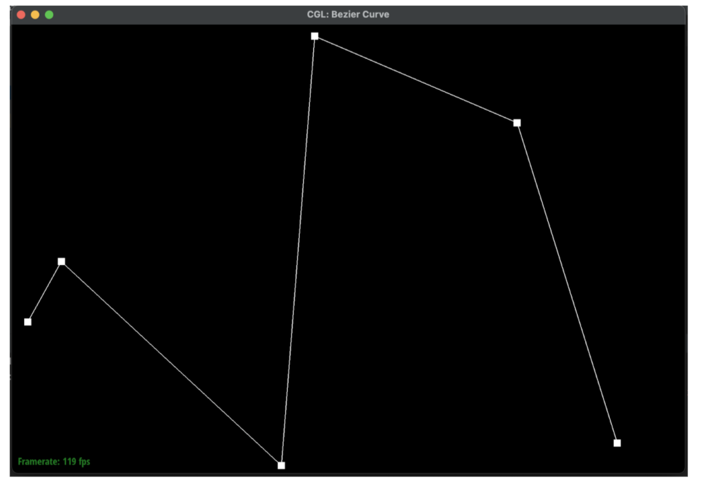 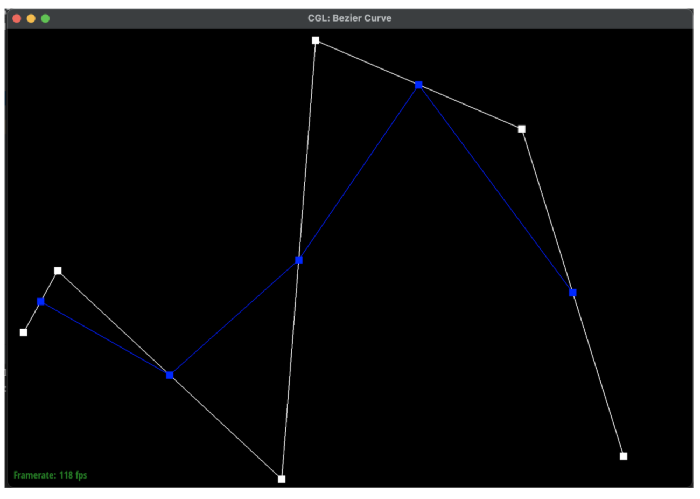 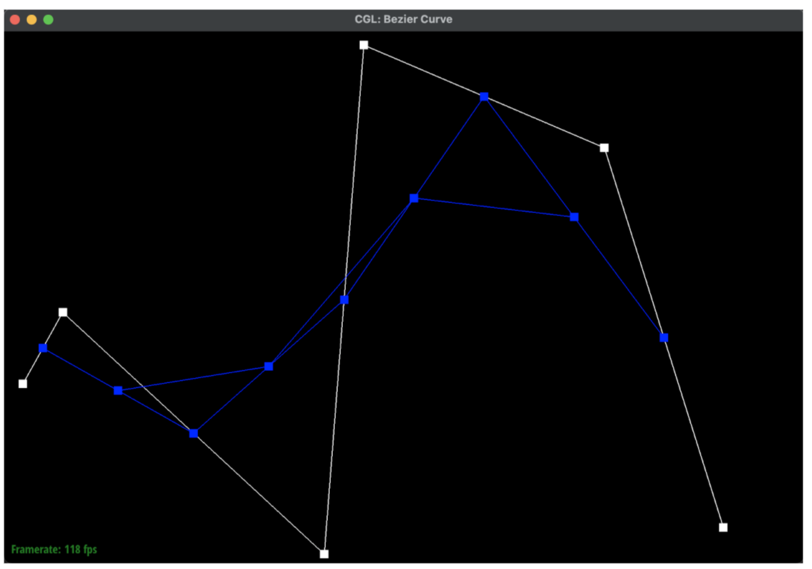 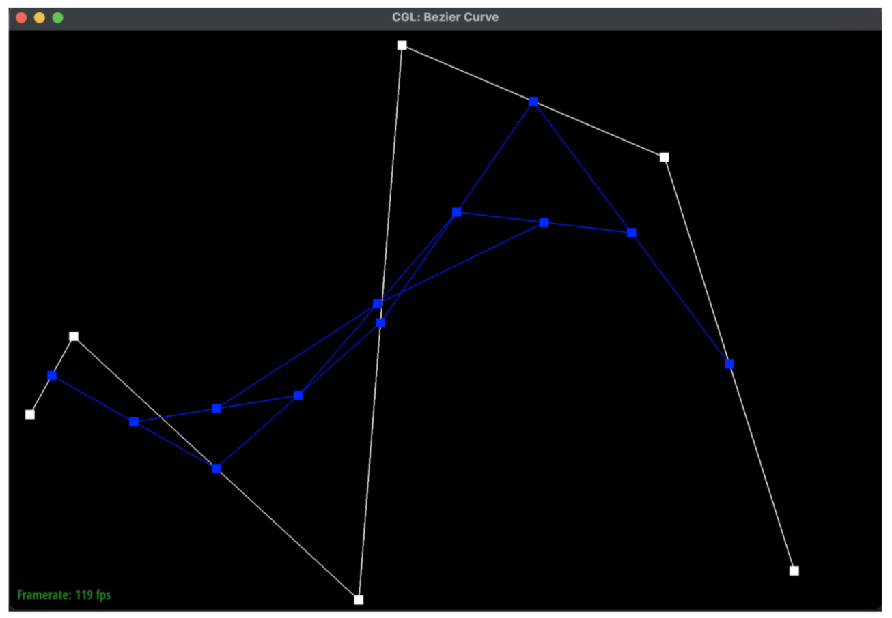 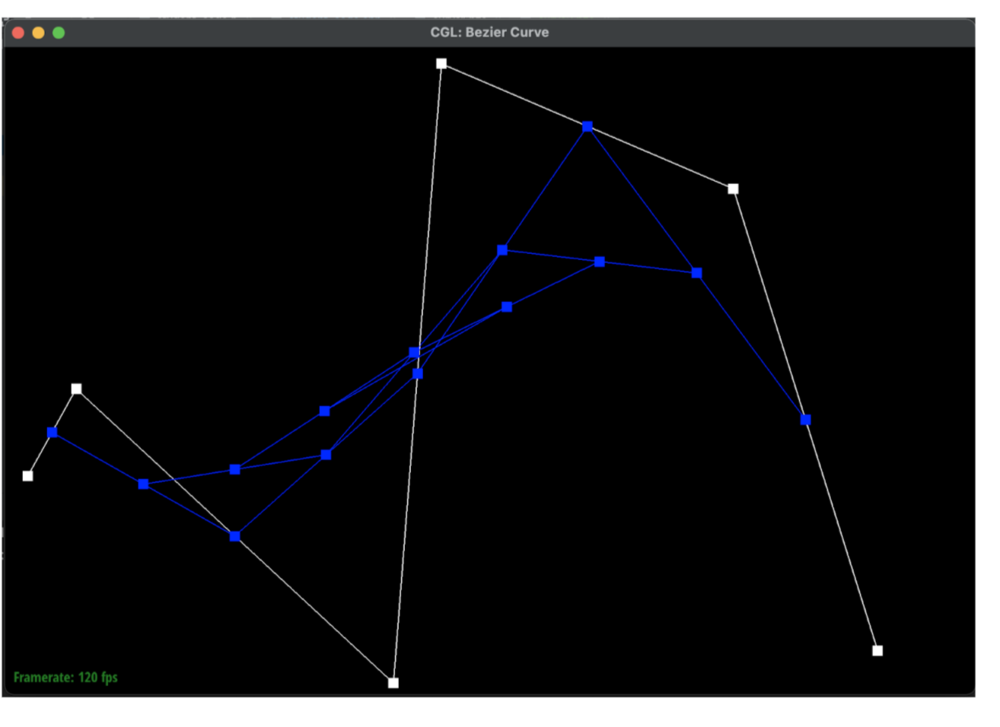 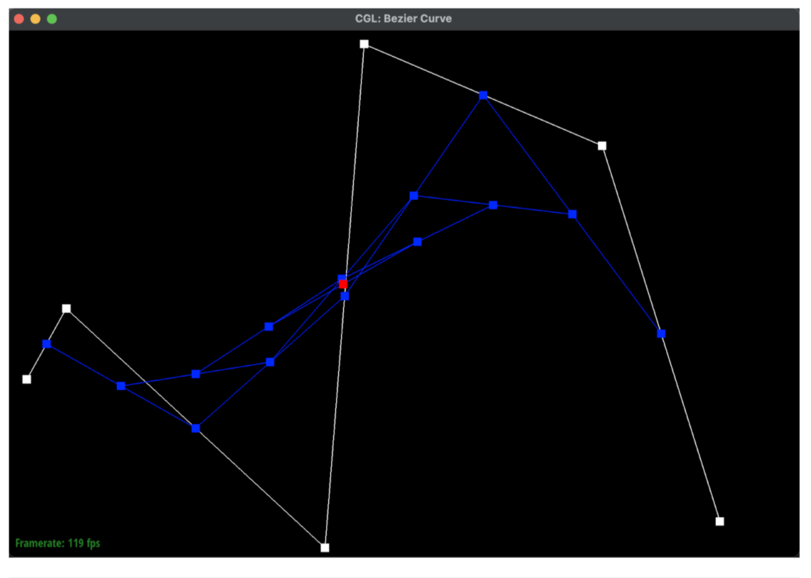 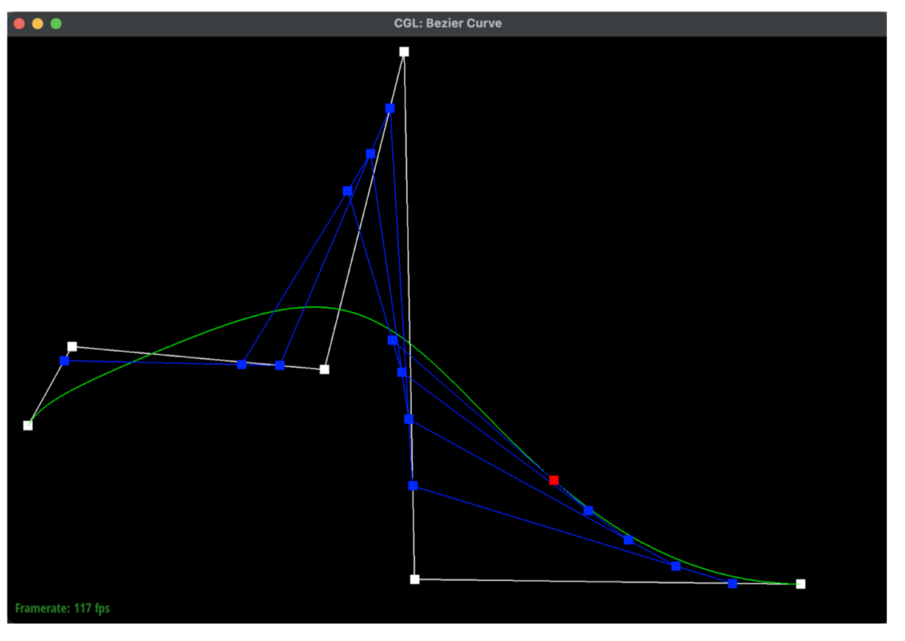
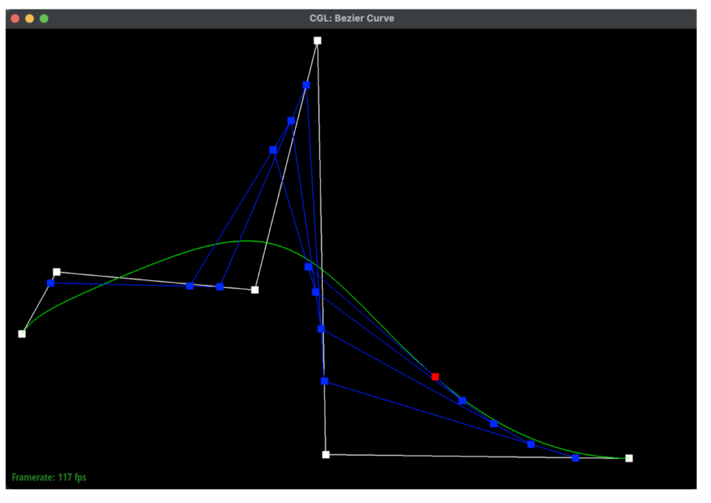
Part 2: Bezier Surfaces with Separable 1D de Casteljau
The de Casteljau algorithm extends to surfaces because we can evaluate the Bezier curve along one axis and get that final point. Then we can evaluate the Bezier curve along all of the final points along the other axis. We implemented it by calling BezierPatch::evaluate1D on all of the rows in control points and added the final point to a vector of 3D points. Then we returned the value produced when we called BezierPatch::evaluate1D on the vector of final points.
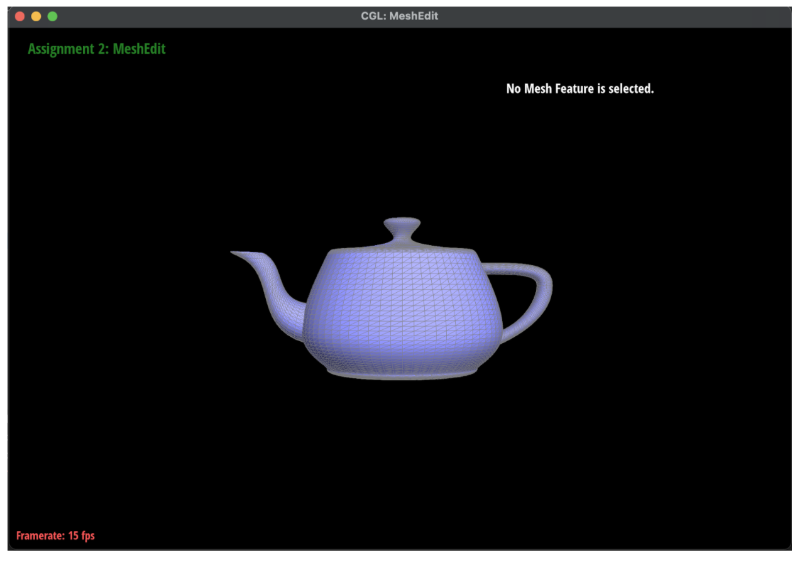Part 3: Area-Weighted Vertex Normals
We implemented the area-weighted vertex normals by iterating through the half-edges and summing up the area of each face. We calculated the surface area of each triangle by taking the cross product of two vectors that represented the distance between the vertex position of the current half edge and the other two half edges of the face, then divided by two. The last step in the algorithm was to normalize the sum of the area-weighted normals.
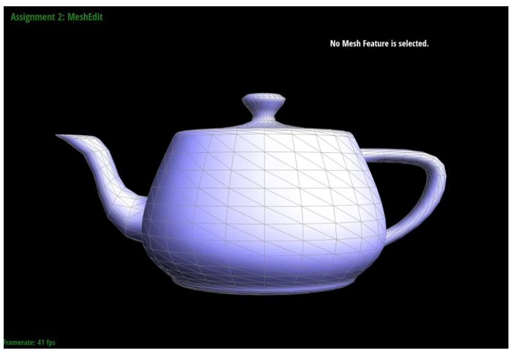 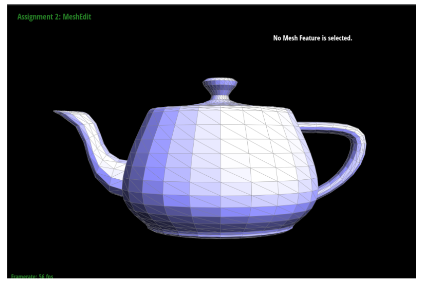Part 4: Edge Flip
We started by drawing a diagram of two triangles and labeling the elements, including vertices, faces, edges, and halfedges. We then collected our elements from the drawing. We set each variable to the same variable name on our drawing. Then, we performed our flip by updating the pointers for all mesh elements affected by the flip. We went ahead and reassigned every element’s pointer to ease the debugging process. The process of drawing and labeling a diagram that matched our variable names verbatim helped the debugging process a lot.
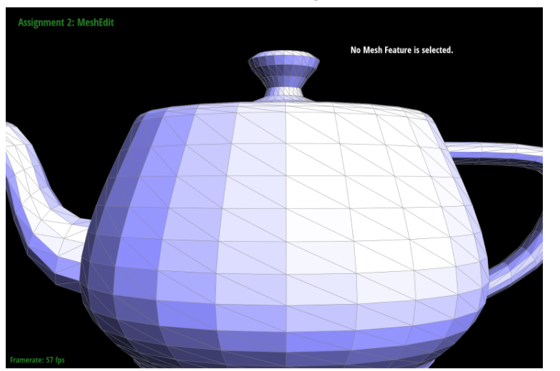 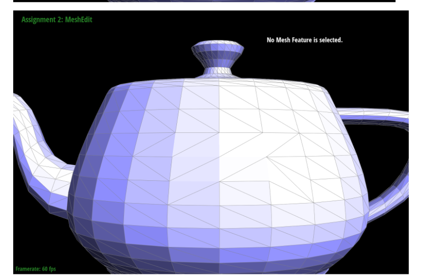We didn’t have a very eventful debugging journey due to the fact that we drew a diagram and followed it closely. We definitely chose to be thorough rather than go for efficiency or more concise code. :)
Part 5: Edge Split
We implemented the edge split similar to the way we implemented the edge flip. We started by drawing a diagram then declaring and initializing variables that reflected the edges, faces, halfedges, and vertices in our diagram. We made sure to include the extra 3 edges, 2 faces, 6 halfedges, and 1 vertex in the variables declared. We then updated all of the pointers for each of the variables, and gave the new vertex a position. We highly recommend drawing the diagram because writing the code for this part was pretty straightforward after drawing a detailed diagram of an edge split.


 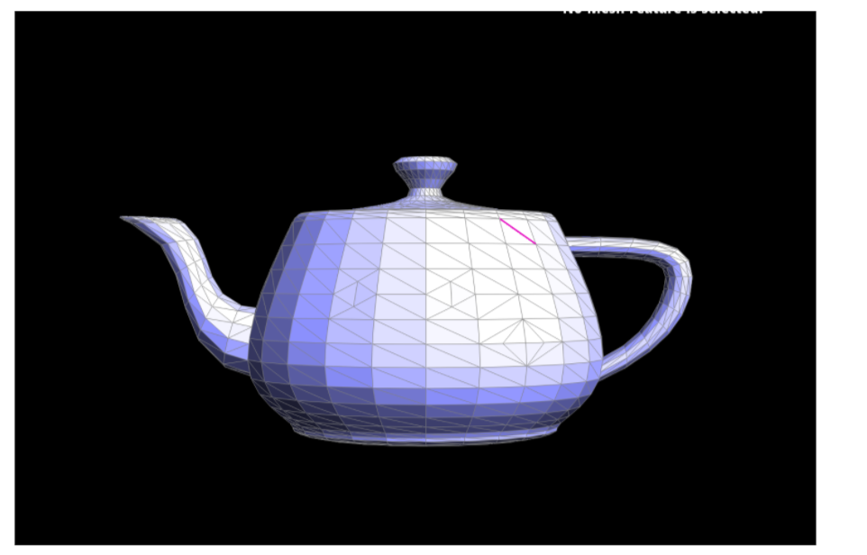
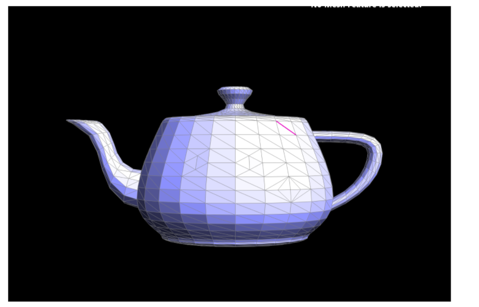
Again, since we carefully drew out a diagram, our debugging journey was pretty uneventful.
Part 6: Loop Subdivision for Mesh Upsampling
We implemented loop subdivision by following the steps recommended in the spec. We iterated through the vertices in the original mesh and computed the new positions for each vertex by following the Loop subdivision rule. We saved the vertex’s new position in the newPosition attribute of the vertex. Next, we computed the new vertex positions for the vertices associated with edges. We followed the formula newPosition = 3/8 * (A + B) + 1/8 * (C + D). Next, we split every edge in the mesh. When we split an edge, we create a new vertex. We set that vertex’s new position equal to the edge:newPosition that we calculated in the previous step. Next, we flip any new edge that connects an old and new vertex. Finally, we copy the new vertex positions into the vertex positions. We faced many bugs in part 6. One of the first bugs we ran into was our vertex positions getting set to zero. We realized we were returning the wrong vertex from splitedge(). We also entered an infinite loop when we tried to split edges. We decided to change our code from a for loop over edges to a while loop over the original number of edges. The final and most frustrating bug we faced was that our edges were flipping incorrectly in our upsample method. We verified our upsampling logic, as well as went through our diagrams and split/flip edge functions, but were unable to locate the awry pointers. We faced some CLion bugs as well. Although we were setting the new vertex position, CLion told us that this variable was never getting used. According to our final step of our algorithm, we should be using this variable because we are setting vertex position to vertex newPosition.
Here is the result of upsampling on cow.dae:


Here is the cow after subdivision:

Our sharp-corners and edges appear to become rounded out as a result of loop subdivision. This effect is especially pronounced on the cube.dae because the edges are at 90 degree angles from each other. Yes, we can reduce this effect by pre-splitting edges near these sharp-corners. I’ll show this effect by preprocessing the cube. Clearly, we have some issues, but you can see generally that preprocessing a sharp corner will reduce the rounding effect.
Here is our cube after iterations of loop subdivision.

Here is our cube, preprocessing one of the corners.
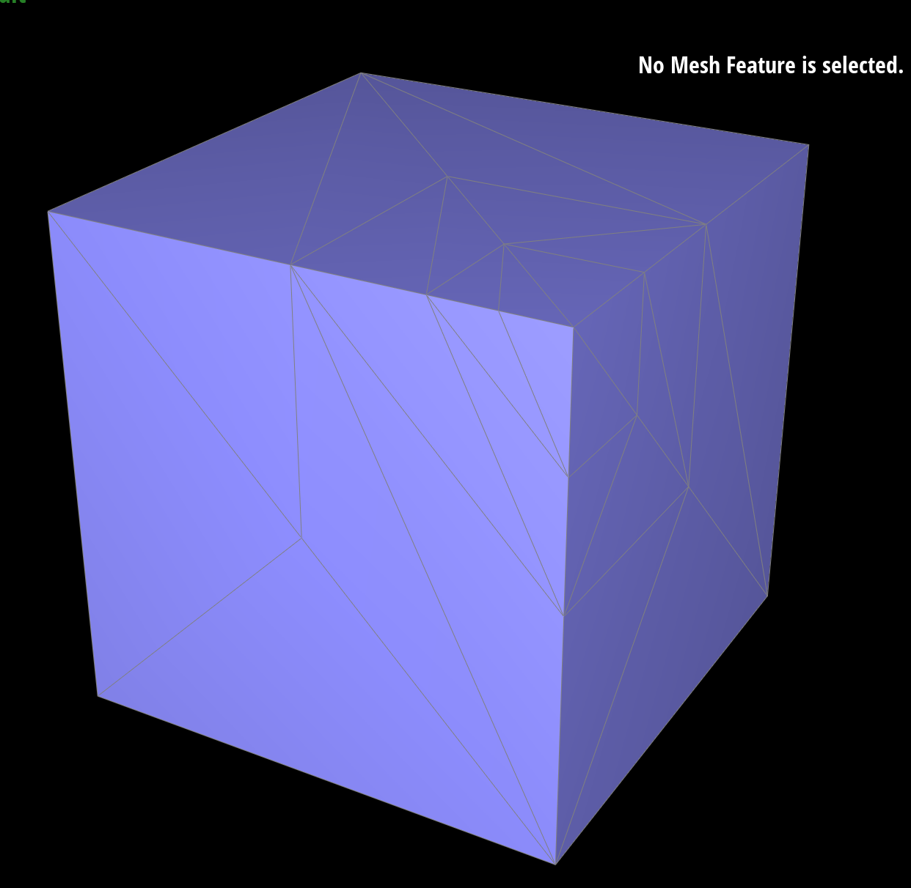 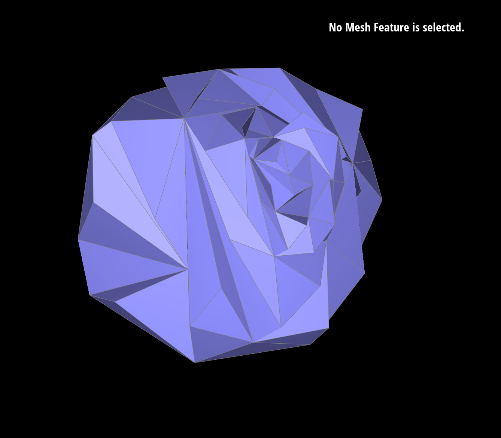